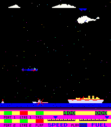

My MAME Driver for Dambusters
The Game Dambusters
The arcade game "Dambusters" was made in 1981 by South West Research Ltd. (SWR) from Bristol/England. The game story is based on a WW II raid by the Royal Air Force. The player's mission is to fly a Lancaster bomber from England to Germany and destroy some dams there. Anti-aircraft fire from ship and shore batteries, defender airplanes, flaks, barrage balloons, and a special technique required to throw the dam bombs make this a difficult task.The game is a side scroller similar to Scramble. In attract mode there is a big Union Jack, which can be turned off by a DIP switch, if the machine is set up in sensitive areas (Germany?). An interesting aspect is, that in the high score list (Roll of Honour ;-) there are no swear words allowed. The program does not accept entries like f**k or s**t. Additionally, in the case some unrecognized offensive word makes it to the Roll of Honour, the operator can delete all the names in the high score table with a special key switch. The names of the game developers are then put into the list instead.
The game exists in a version for the UK and one for the USA. The UK set differs in some minor aspects from the US set (see screen shots below). In the USA the game seems to have been licensed to Game-A-Tron (GAT).
The hardware is Galaxian-like with a daughter board containing RAM, ROMs, modifications to the Galaxian-design, and some encryption tricks.
My MAME Driver for Dambusters
On August 6, 2006 I finished my MAME driver for Dambusters. This is my third driver (after Super Tank and Mad Alien). The emulation was difficult because of the encryption of some ROMs and because I have never seen the actual game, nor have I seen any screen photos. Fortunately, I had the schematics. I could derive a lot from them, but the schematics of the infamous daughter board show only a rough wiring of the chips, and there are no descriptions of the used ICs. Probably, to make reveres-engineering harder.There is still one problem with the MAME driver. There is one ROM missing in the available dumps. It is the color palette ROM, which has 32 bytes. I manually assembled a file called "dambustr.clr", which is only my wild (and certainly wrong) guess of the contents of this ROM.
Could someone please dump the ROM and add it to the ROM set. Based on my reverse-engineering work on the Dambusters schematics I am rather sure, that this ROM is a chip on the daugther board called "IC4" in the schematics and probably also on the actual PCB. It is connected to socket "SK1" and is probably a 82LS123 or a 74188 32x8 bit PROM.
If a dump is not possible, the ROM could be reconstructed from screen photos. If someone has a working game, please send me some screen shots by email or reconstruct the ROM by yourself. The format can be seen from the MAME source code.
I got an email from Guru. He said, that the missing ROMs will probably never be dumped.
I got also a highly interesting email from Chris Hardy. He is a friend of maybe the only person who still owns a Dambusters machine. This guy dumped the currently available ROM sets, but unfortunately he moved from the UK to the USA leaving his machines in a storage back in the UK. He wrote some facts about the hardware to Chris Hardy: The missing color ROM and a second 32 byte ROM on the daughter board, which is --- as I believe --- responsible for the encryption, are both soldered into the PCB. This makes it even more improbable that the ROMs will ever be dumped. Chris Hardy's friend also gave him a list of the actual chips on the daughter board, which are not labeled on the schematics. I did not have this information when I wrote my MAME driver and had to find out by myself, which kind of chips these could be. I guessed them in a rather long process by deducing the chips' type from the connected pin numbers and by using assumptions about the function of the chips. It turned out that my guess was correct for nearly all of the chips on the daughter board :-)) There is more on this below in my log of activities. Chris, thanks a lot for the great email!
My Log of Activities for the MAME Driver
I wrote down my activities on the long way to the Dambusters driver in kind of a log, in the hope that it might be interesting at least for a few people. It describes which problems I ran into and what little break-throughs I had in the course of reverse-engineering the hardware and writing this MAME driver. Do not expect too much, it is just what I thought of at the time when I worked on the game. I made a lot of assumptions which turned out wrong later. It all started back in February 2004 ...February 2, 2004: Wrote a Java program to emit the graphics of the game. I get the Dambusters manual containing the schematics from the internet (from the cool KLOV site).
February 22, 2004: Found out that ROM files db-1 to db-4 contain the graphics data. db-1 and db-2 are 512 characters with 8x8 pixels in two separate bitplanes. db-3 and db-4 are 128 sprites with 16x16 pixels in two separate bitplanes. Doing the decoding from scratch in Java is too much boring work, so I start with a MAME driver. First I copied a simple Z80 game (Solomon) and throw everything out except for the graphics decoding.
February 27, 2004: I manage to correctly set up the graphics in the MAME driver. Now I go back to the Java level to explore the game program. I use my Java Arcade Emulator JAE as the base. My PC is from 2000, so a single game emulator in Java has a much faster prototyping cycle than a MAME driver (recompiling MAME after one single little change takes a minute or so). With a modern PC I would do this job directly in MAME, of course.
February 28, 2004: The Java experiments do not yield any success. I make disassemblies of the program ROM files, and try to deduce from them at which addresses the ROMs might reside. No success, as the ROMS do not seem to contain any meaningful Z80 programs.
March 3, 2004: The ROMs must be encryted, at least they are mixed up somehow. I use the ROM files containing ASCII texts to find out how they should be ordered to make the ASCII texts meaningful strings. First I put one file together in correct order manually (8 byte groups are swapped in the ROM files). I write a Java program to automatically generate the correct order of the 8 byte blocks for the other files. Then I disassemble the now descrambled files. Looks much better, but not really OK for many places. I try to find out the address space locations of the ROM files by analyzing the Z80 code in the files after doing the descrambling. Not really clear and easy.
March 6, 2004: I decide to start with the analysis of the schematics. I can see that it is a Galaxian-like
board. $f001, $f004, $f006, and $f007 are the same as Galaxian's $7001, $7004 etc. The ROM code at $0000
could be in file db-1 but also in db-11a. Maybe the machine boots with db-5 and can then bankswitch to
db-11a. Maybe in service mode it boots with db-5. Completely open ???
I continue with the Java emulator and visualize the memory area, which I think is the video RAM. There
are some activities visible, but they do not really make sense. Interrupts, input ports, a.s.o. are completely
unclear. I switch back to the MAME level and insert my findings from the Java emu there.
--- After March 2004 I lost my interest for the game and turned to other things. I had a really bad time in 2004 and a really good time in 2005. In these years I tried from time to time to find out more about Dambusters, stared a lot at the schematics a.s.o., but did not work on the game very intensively. ---
June 23, 2006: after more than two years I am back on my Dambusters driver again. I check the ROM file
disassemblies again. The code still does not really make sense. I set up and try many assumptions on the machine
and the code. Example: There is an output port which somehow does a memory bankswitch (there seem to be
some "out" commands in the code, and in the schematics the Z80 OUT pin is connected). Then, I find out
that the ROM, that I first thought is at $5000 should be at $1000. This ROM must also be encrypted somehow,
and not only by the simple swap of 8 byte blocks I already know from my early work on the game.
I download the Z80 disassembly of the ROM to Excel and group the call
commands together to find frequently called subroutines and analyze them in detail. I put up the
hypothesis that some commands are OK and make sense, while others are nonsense (encrypted somehow). The
nonsense commands do not appear in regular intervals. I cannot find any pattern in the locations at
which the nonsense commands appear. I am near to giving up again. Now I have the idea to try to guess
how the code with correct commands would logically continue at a location where wrong commands start.
In the following there are some examples:
Subroutine at $129e: 529E: 3A 05 C1 ld a,($C105) ok 52A1: 32 01 80 ld ($8001),a ok 52A4: 3A 04 C1 ld a,($C104) ok 52A7: 21 10 C1 ld hl,$C110 ok 52AA: B6 or (hl) ok My guess of the correct code: 52AB: 31 B6 32 ld sp,$32B6 ? 52AB: 23 inc hl 52AE: 00 nop ? 52AD: 32 00 80 ld ($8000),a 52AF: 80 add a,b 52B0: C9 ret ok subroutine at $10a2: 50A2: 14 inc d ? 50A3: 14 inc d ? My guess of the correct code: 50A4: 03 inc bc ? 50a4 11 06 c1 ld de,$c106 50A5: 06 C1 ld b,$C1 ? 50A7: 21 48 C0 ld hl,$C048 ok 50AA: 1A ld a,(de) ok 50AB: FE FF cp $FF ok 50AD: 20 07 jr nz,$50B6 ok 50AF: 7E ld a,(hl) ok 50B0: B5 or l ok 50B1: 28 1C jr z,$50CF ok 50B3: 3A 1B C1 ld a,($C11B) ok 50B6: 96 sub (hl) ok 50B7: ED 44 neg ok 50B9: FA D1 02 jp m,$02D1 ok 50BC: FE 08 cp $08 ok 50BE: F2 D1 02 jp p,$02D1 ok 50C1: BD cp l ? 50C2: 12 ld (de),a ok 50C3: 77 ld (hl),a ok 50C4: 13 inc de ok 50C5: 31 31 31 ld sp,$3131 ? 50C8: 31 02 DF ld sp,$DF02 ? 50CB: C9 ret okFrom these guesses I can see, that for example following conversions generate correct code:
$03 --> $11 (e.g. ld de,$xxxx) $31 --> $23 (e.g. inc hl)Hey, this looks like a simple swap of bits 1 and 4. But why only for certain commands and not for all of them? Then, I see, that the bitswap is actually done for each byte of the ROM, but in very many cases bits 1 and 4 are the same, and so the result of the bitswap is the same number as the original byte.
This must be the key to the encryption method. I quickly code the bitswap into the MAME driver and start the game up again.
And, wow, it is running !!!
It is June 24, 2006 at 01:24 AM.
First, the Union Jack! Then, the scrolling title text on the bottom of the screen. Attract mode is running! No sound, no controls implemented, wrong graphics, but for the first time the game is running :-)
Now, I am sure, that I can do the rest easily and go to bed after implementing the DIP switch to turn the Union Jack on and off.
June 26, 2006: The "rest" is not as easy as I thought. Fhe first problem is, that the attract mode is OK, but
the game itself crashes. I go back to the disassemblies to find, that the order of the ROMs in memory
is still wrong, and that only certain ROMs seem to have the bitswap. I just try out different combinations
of locating ROMs in the address space and different combinations of applying my bitswap and the 8 byte block
swap on the ROMs. After a lot of guessing, I can also make the game code run. It is a side scroller like Scramble!
Is it Scramble hardware (which is also Galaxian-like)? Still not clear.
The game has 2 character sets (text and graphics). How is the switch between them done? I turn on the text
characters for the moment to be able to read the texts.
I play around with the service mode the game has built in. In this mode it is easy to find out exactly where
the controls are mapped in memory. Except for the switch to delete swear words from the "Roll of Honour",
which is not tested in Dambuster's service mode.
The colors are still completely wrong, as I decided to use the Galaxian palette ROM dump for the moment.
But in the real game, is there a palette RAM, or are there palette ROMs missing??
June, July, and August 2006: With the early-stage MAME driver I see that there are writes to memory locations
$8000 and $8001. What is this? Could it be some kind of sound? I try to map it to the LFO simulation in the
Galaxian driver. But probably, it has nothing to do with sound. There seems to be nothing like that in
the Galaxian hardware. The Dambusters schematics will have to be analyzed to figure out how the machine
really works. Dambusters is a Galaxian derivative, so I also get schematics of Galaxians and of Moon Cresta
(a Galaxian clone) to compare them to the Dambusters schematics.
The main board is almost the same as Galaxians but there is a strange daughter board that seems to be
responsible for the different behavior. Unfortunately, the schematics of the daughter board are not exact.
There are no chip descriptions on it, just sequential numbers. Probably SWR did this to make reverse-engineering
harder for competitors.
But the daughter board is important, so I take my TTL handbooks and check, which
pins are connected on the chips, and try to derive from that which types of IC it could be. I make a lot
of assumptions and hypotheses on the functions of the circuitry on the daughter board, which sometimes turned out wrong
later. But with this method I can guess all the chip types on the board. And more and more of the functions
implemented on the daughter board are revealed. I now see, that $8000 and $8001 are responsible for some
additional video capabilites of Dambusters. The switch between the two character sets is done with them, and
the background can be split into two areas with different colors. The background can also have priority over
the foreground. But this priority is reversed again for screen rows with color codes 4 to 7. Weird design,
and this is only done for some nice effects in the attract mode.
This process of analyzing the schematics and guessing the workings of the daughter board took me a rather long time. But it was a nice work, which I did on our terrace in July 2006, which was extraordinarily warm and sunny here in Austria. In parallel, I coded my findings into my MAME driver and at last the game seemed to be running correctly. It is clear now, that there are two ROMs missing in the dumps. One is responsible for the encryption of the program ROMs. This is not really a big problem, because this is implemeted in the MAME driver directly. But the second one is the palette ROM. To have at least correct colors in the service mode I hand-assembled this 32 byte ROM accordingly. But all the colors not tested in service mode are wild guesses and certainly wrong. I am hoping for some feedback or even a dump of these ROMs after the release of my MAME driver. For this release I think the time has now come.
August 6, 2006: I submit my MAME driver to MAMEdev and put some screenshots and descriptions on my homepage.
August 8, 2006: I get interesting feedback from Guru and especially from Chris Hardy (see above).
A friend of Chris owns a Dambusters machine and gave him a list which chips are actually on the daughter board.
I immediately compared his list with my guesses and all guesses were correct (except for one chip, where I
thought it was a NAND gate but which was an AND gate in reality) :-)).
The ICs on the daughter board are the following:
IC1 - LS139 IC2 - LS00 IC3 - PROM IC4 - PROM IC5 - LS157 IC6 - LS08 IC7 - LS374 IC8 - LS374 IC9 - LS257 IC10 - LS191 IC11 - LS191 IC12 - LS73 IC13 - n/a IC14 - CD4066 PR13 - 6116.
August 10, 2006: On www.mamedev.org the MAME version 0.107u3 is released. It contains my Dambusters driver :-)
Dambusters is emulated at last. Maybe not everything is perfect in my MAME code, but the MAME developers' community will certainly still improve some pieces. It took a long time because of the encryption and the daughter board, but maybe it is exactly this difficulty, which made this driver such a challenge and so much fun for me.
The First Dambusters Screen Shots
Now let's have a look at the first screen shots from my Dambusters driver (wrong colors):
Attract mode and the screens with the game instructions:
The game running:
|  |
Entering high scores and Roll of Honour:
In service mode:

|
The differences between the UK and the US version: